중국의 A2/AD 전략에 맞선 미해병대의 개혁
게시: 2022-08-11T06:30:06+09:00
<중국은 A2/AD, 한국은 '포방부'> 국방 전략은 말장난뿐인 것 같지만 나름 중요. 이런 전략은 한정된 자원을 어디에 집중하느냐 하는 국가 전략 차원에서 꼭 필요한 것. 장차 미국과 대치하려는 중국은 A2/AD에 기초를 둔 전략을 가짐. 한마디로 기갑부대나 전투기, 잠수함 등에 대한 투자보다 DF-21과 같은 대함탄도탄에 더 집중투자하고, 더 나아가 항모에 투자한다는 것. 굳이 우크라이나전에 비교하자면 DF-21은 적을 막아내기 위한 재블린, 중국 항모 CV-18은 전진하기 위한 탱크에 해당. 우리나라의 경우는 공군이나 해군은 강백호의 왼손일 뿐, 모든 것을 포병에 몰빵. 이유는 국방 최우선 순위를 적 지상군 남침의 저지에 두었기 때문. 사람들은 포방부라고 비웃지만 나름 전략에 충실한 셈. 문제는 그 전략이 1960년대 부칸이 우리나라보다 더 잘사는 나라일 때를 기준으로 한 것이라는 점. 이제 휴전선을 넘어 파도처럼 밀려올 부칸 기갑부대라는 것은 존재하지 않는데도 여전히 러시아군 기갑부대도 박살낼 수준의 자주포 전력을 유지. 그러나 현재 우리나라를 위협하는 것은 탱크가 아니라 부칸의 미쓸. 그것도 핵미쓸. 주식투자로 비유하자면, 중국은 최신 트렌드를 열심히 고민하고 연구하여 투자하는데 비해, 한국은 1998년 IMF 시절은 고사하고 1970년대 오일쇼크 때 세운 전략으로 투자하고 있는 셈.
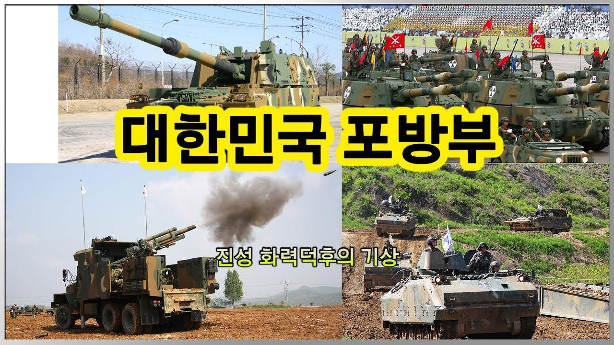 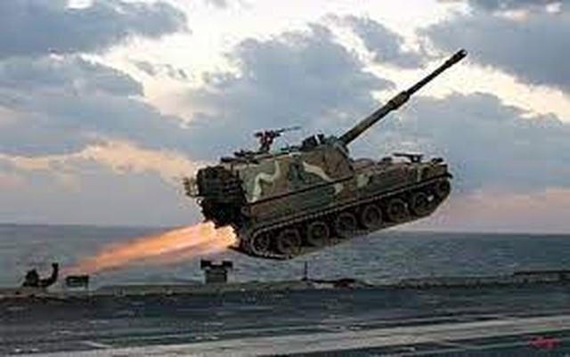
<A2/AD는 어떻게 나온 전략일까> 중국은 미국에 버금가는 경제력과 인구를 가진 G2. Hot war든 cold war든 결국 미국과의 대결은 피할 수 없음. 당연히 중국은 자신의 확장을 억제하는 미국의 군사력에 어떻게 대응할지 관찰하고 연구함. 1812년 미영 전쟁이나 WW2 같은 거 연구해봐야 기술 발전과 국제정치 변화 때문에 무쓸모. 그래서 최근 30년 간의 미국 군사 활동에 집중. 그 결과 중국이 알아낸 것은 미군은 바다 근처에서 제공권을 장악한 상태로 싸우는 것에 익숙하고, 그 두가지 조건 중 하나라도 충족이 안되면 고전한다는 것. 대표적인 것이 아프가니스탄 전쟁. 영국이나 미국이나 바다가 없으면 해양전투민족인 앵글로색슨은 힘을 못씀. 아래 그림처럼, 보급로 유지가 너무 어렵기 때문.
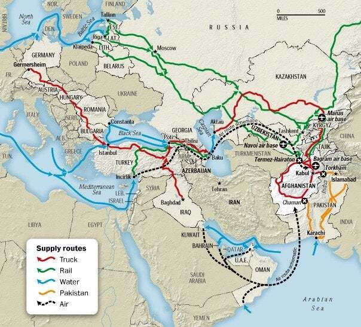
그래서 중국은 적어도 자국 근처에서는 미군의 제공권과 제해권, 특히 제해권에 도전해야 함. 그래서 나온 것이 바로 A2/AD (anti-access/area-denial). 이름이야 어떻든 본질은 그냥 단순. 장거리 유도무기를 대량으로 개발배치하여 미해군 함정들, 특히 항모가 동중국해와 남중국해에 감히 접근하지 못하도록 하자는 것.
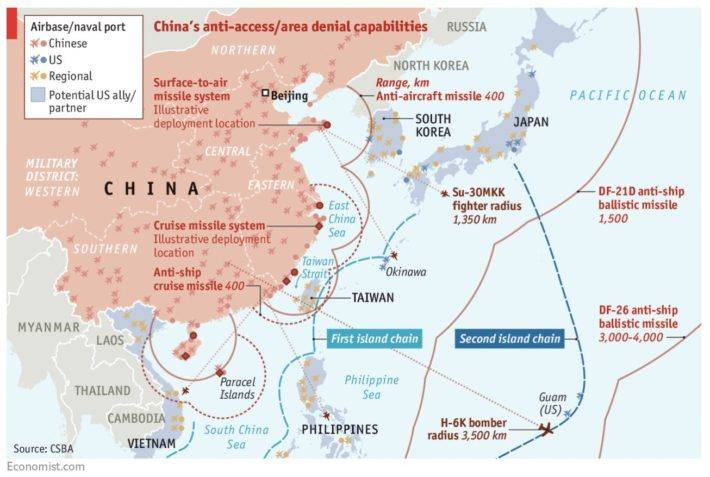
<중국에게 정책이 있다면 미군에게도 대책이 있다> 중국이 A2/AD 전략을 세우고 그에 따라 투자를 한다고 중국이 이기는 것이 아님. 미군도 당연히 중국의 전략에 맞설 대응 전략을 구상. 미국을 천조국이라고 부르는 우리나라 밀덕들은 중국의 A2/AD에 대해 'DF-21이 미해군 수퍼캐리어를 때린다고? ㅋㅋ'라며 비웃기도 하고, 반대로 미군이 A2/AD에 대해 무섭다고 앓는 소리를 내면 '저거 다 의회에서 예산 타내기 위해 엄살부리는 거임'이라며 믿지 않는 경향이 많음. 그러나 미군은 나름 진지하게 A2/AD에 대해 대응 중인데, 미공군은 스텔스 기술에 집중하는 느낌이고, 미해군은 장거리 타격능력을 키우려는 쪽으로 방향을 잡은 듯. 1990년대 초에 A-3 Skywarrior(사진1)가 퇴역하면서 미해군에서는 함재 공중급유기가 사라졌는데, 이후에도 간간히 함재 공중급유기는 필요했으므로 현재는 F/A-18에 공중급유용 보조연료탱크를 달아서 buddy refueling(사진2)을 하는 땜빵으로 버티는 중. 그러나 중국의 A2/AD에 대응하려면 중국의 대함탄도탄 사거리 밖에서 중국 해안을 타격해야 하는데, 그러자면 제대로 된 함재 공중급유기가 필요. 그래서 개발 중인 것이 무인 함재 급유기인 MQ-25 Stingray(사진3).
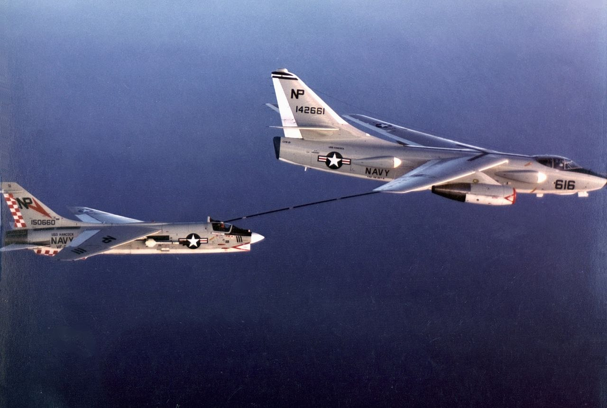 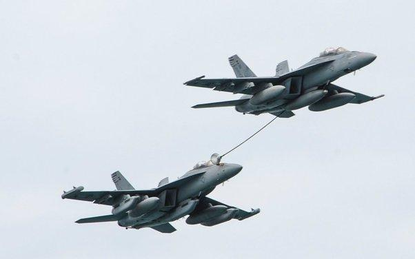 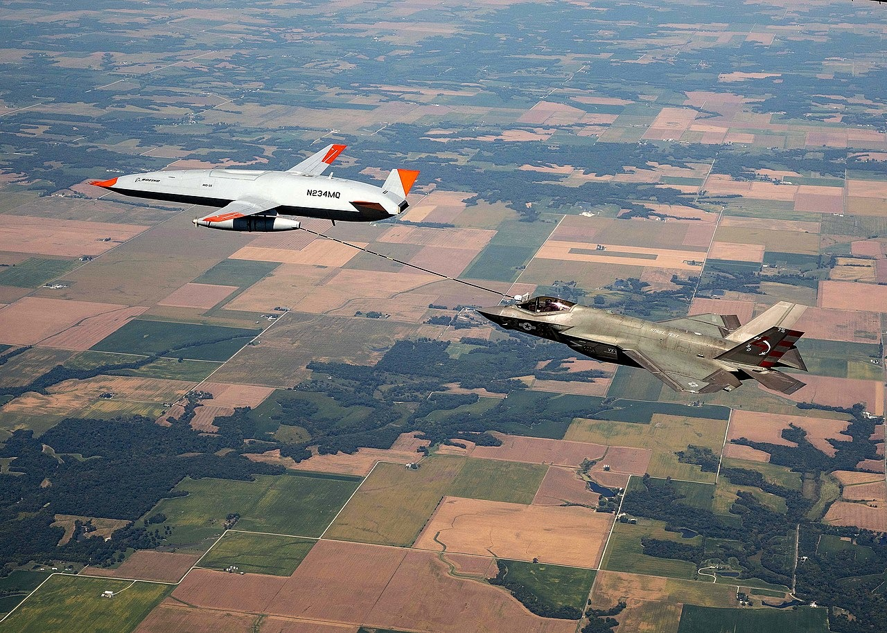
그러나 가장 먼저 본격적인 대응책을 마련하고 실제로 투자에 나선 것이 바로 미해병대. 유사시 중국 해군과 공군의 저항을 뚫고 중국 해안 또는 대만 해안에 상륙해야 하는 미해병대가 지난 수년간 연구 끝에 내린 결론은 'A2/AD에 따라 배치될 중국 장거리 미쓸의 소나기를 뚫고 들어갈 방법이 없다'라는 꽤 우울한 것. 그러나 거기서 좌절하고 끝난다면 미해병대가 아님. 해병대 총사령관인 David Berger 장군이 세운 전략은 '유사시 뚫고 들어갈 수 없다면 일이 생기기 전에 먼저 들어간다'라는 것. 즉, 중국의 대함탄도탄을 막을 기술에 투자하지 않고, 아예 사전에 중국을 둘러싼 도련선(chain of islands) 곳곳에 미리 장거리 대함 미쓸과 대공 미쓸로 무장한 해병대를 배치하자는 것.
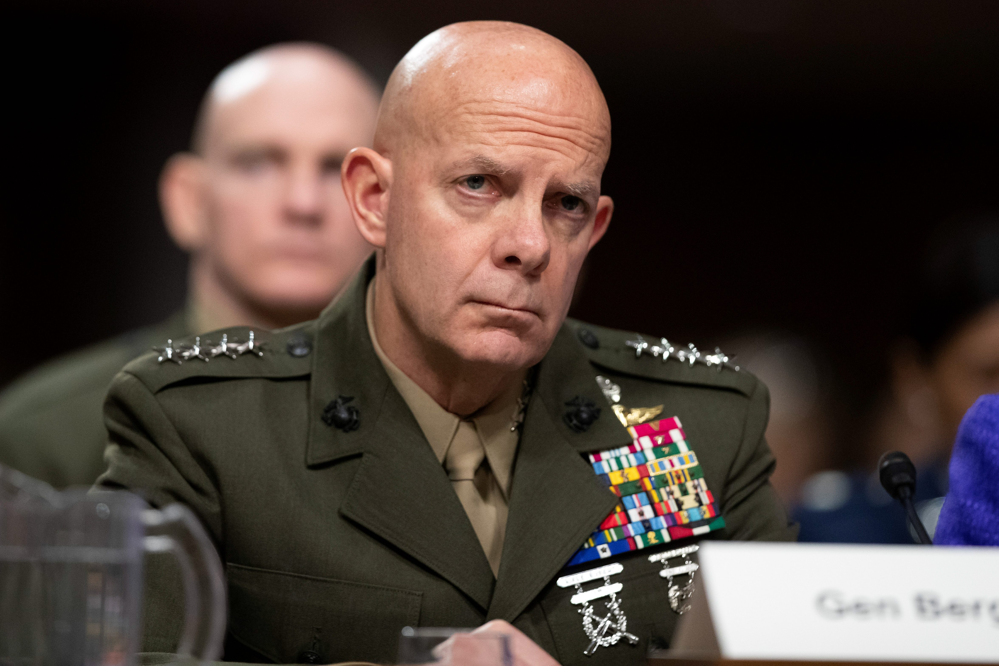 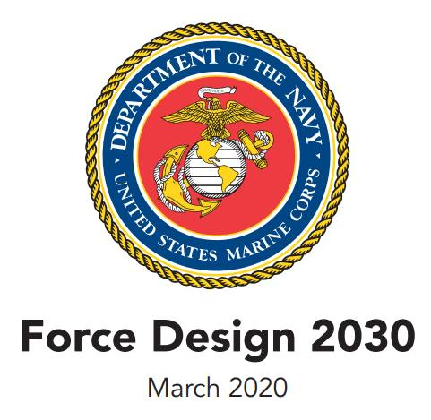 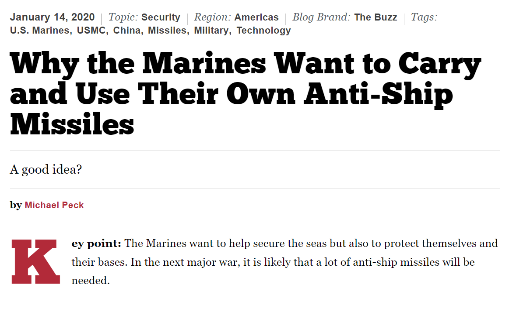 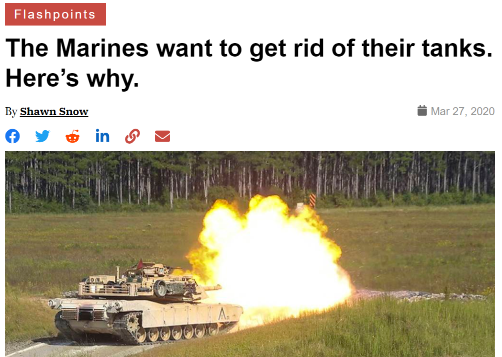
이건 나름 좋은 전략을 세웠다고 자뻑 중인 중국의 뒤통수를 치는 행위. 대함탄도탄을 개발하고 배치하는 것도 어렵고 돈이 많이 들어가는 일이지만, 그로부터 항모를 지켜내는 기술을 개발하고 배치하는 것은 훨씬 더 어렵고 훨씬 더 큰 돈이 들어가는 일. 어떻게 보면 중국의 A2/AD는 실제로 미해군 수퍼캐리어를 격침시키는 것보다는, 미군이 DF-21 막아내는 기술을 만드느라 헛돈 쓰며 국력 낭비하도록 유도하는 전략. 그런데 미해병대의 대응은 중국의 전략에 놀아나지 않고 반대로 중국으로 하여금 코 앞 도련선에 깔린 대함미쓸로부터 자국 해군함정들을 보호할 기술과 장비에 돈을 쓰게 만드는 것. 미해병대는 이렇게 입만 터는 것이 아니라, 실제로 그 전략에 맞춰 체질 변경에 나서고 있음. 대표적인 것이 기갑부대를 없애고 포병부대를 대폭 축소하며, 초수평선 상륙을 위한 헬리콥터 및 상륙함 등에 투자를 줄이고 대신 장거리 대함미쓸 전력을 양성. 그러나 그런 미해병대의 변화에도 당연히 미군 내부에서 많은 반발이 있음. <미해병대의 개혁에 대한 저항> A2/AD에 대응하는 미해병대의 개혁을 크게 묘사하면 '기갑부대와 포병부대 등을 없애는 대신 해병대를 섬에 배치될 장거리 대함미쓸 운용부대로 체질변환시키는 것'. 이 계획에 대해 해병대는 물론 미의회 등에서도 우려와 반발이 적지 않음. 1) 미해병대의 본질을 망가뜨리는 행위이다! : 미해병대는 해상, 지상, 공중의 여러 병종을 통합하여 싸우는 것이 특기인 신속대응군 성격의 정예군. 이 기술은 해군이나 공군, 육군처럼 머릿수나 장비에 대한 투자로 유지할 수 있는 것이 아니라 정말 해병대 내에서 고참이 신참에게 가르치는 방식으로 이어지는 것. 그런데 모래와 파도를 무릅쓰고 돌격소총을 다루는 근육질 전사들인 해병을 안경쓰고 콘솔 뒤에 앉아 미사일 발사 버튼이나 누르는 nerd로 바꾸겠다고? 그럴 경우 여태까지 이어지던 본질적인 경험과 기술이 사라지게 된다! 한마디로 해병정신이 사라진다! 2) 동맹국이 동의하지 않으면 말짱 꽝인데? : 이 개혁안의 핵심은 전쟁이 터지기 전에 미해병대를 도련선에 배치하는 것. 그런데 일본이나 필리핀, 특히 대만이 미해병대가 자국 섬에 배치되는 것에 반대하면 어떻게 할 것인가? 가령 핵심 동맹국인 일본조차도 미군 병력이 오키나와 이외 지역에 추가로 배치되는 것에 반발하는 목소리가 일본 국내에서 높아지고 있다. 또, 중국과의 대결에서 가장 중요한 대만에 미해병대가 미리 배치되는 것이 국제 정세상 가능하겠는가? 3) 이거 WW2 당시 웨이크섬이 생각나는 걸? : WW2 당시 태평양의 웨이크섬에 배치되어있던 미해병 수비대는 빈약한 항공대가 소진되자 아무 힘도 못쓰고 일본해군에게 포로가 되고 말았다. 해병대의 장거리 미쓸 부대가 계획대로 A2/AD 구역 안에 있는 도련선에 미리 배치된다고 해도, 중국과의 전쟁이 벌어지면 거기에 병력 보충과 무기 보급은 어떻게 할 것인가? 보급선이 중국의 A2/AD를 뚫고 들어갈 수가 없지 않나? 미리 배치해놓았던 미쓸이 다 떨어지고나면 웨이크섬 주둔 해병대처럼 그냥 중국군의 먹이가 되는 꼴 아닌가?
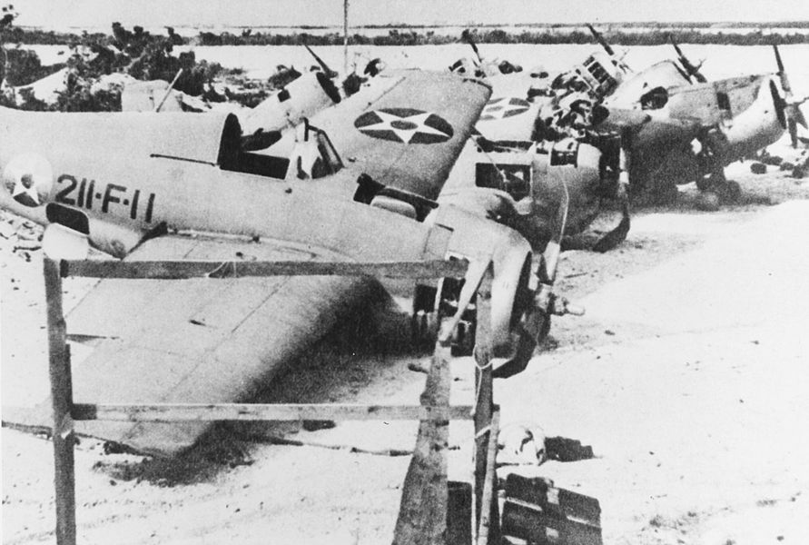 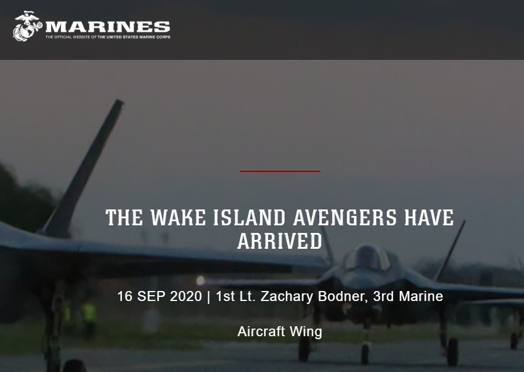
4) 미래 전쟁이 중국 해안에서 벌어지는 것이 아니면 어쩌지? : 가령 대만이 아니라 한국에서 전쟁이 나면 미해병대는 아무짝에도 쓸모없는 군대가 되는 것 아닌가? 중국과 전쟁이 나더라도 인도-중국 국경에서 전쟁이 벌어지면 어떻게 되는 거지? 중국이 아니라 아예 러시아나 베네주엘라와 전쟁을 벌이게 되면 어쩌지? 5) 이거 육해공군하고는 이야기가 된거야? : 미육군도 장거리 로켓포대에 투자하려고 하던데, 그거하고 뭐가 다르지? 섬에 미리 들어가서 대함미쓸 쏘고 드론 날리고 하는 거는 육군이 해도 되는 거 아니야? 그리고 미해병대가 수평선 너머에 있는 중국 군함에 미쓸을 쏘려면 공중에 초계기 같은 거 띄워야 가능한 거 아닌가? 결국 어차피 미해군이나 미공군의 도움이 있어야 미쓸을 쏠 수 있는 건데, 해군이나 공군과 협의도 안 하고 일방적으로 밀어붙이는게 무슨 의미가 있지?
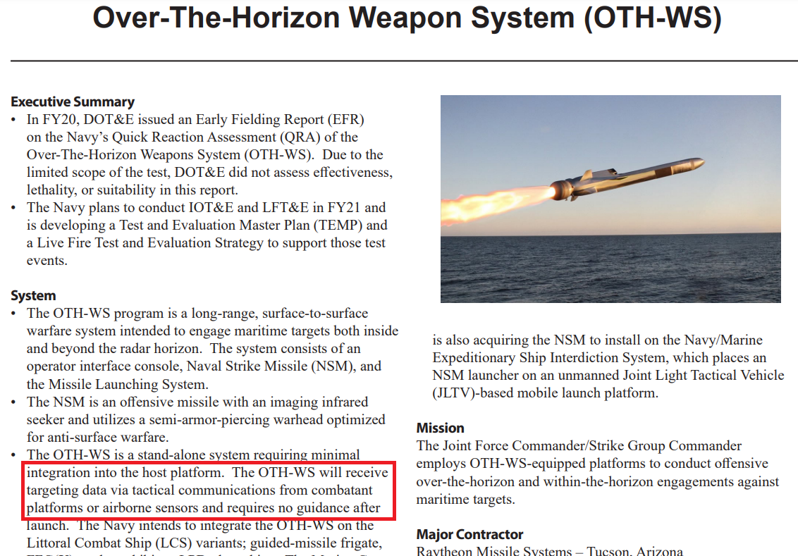